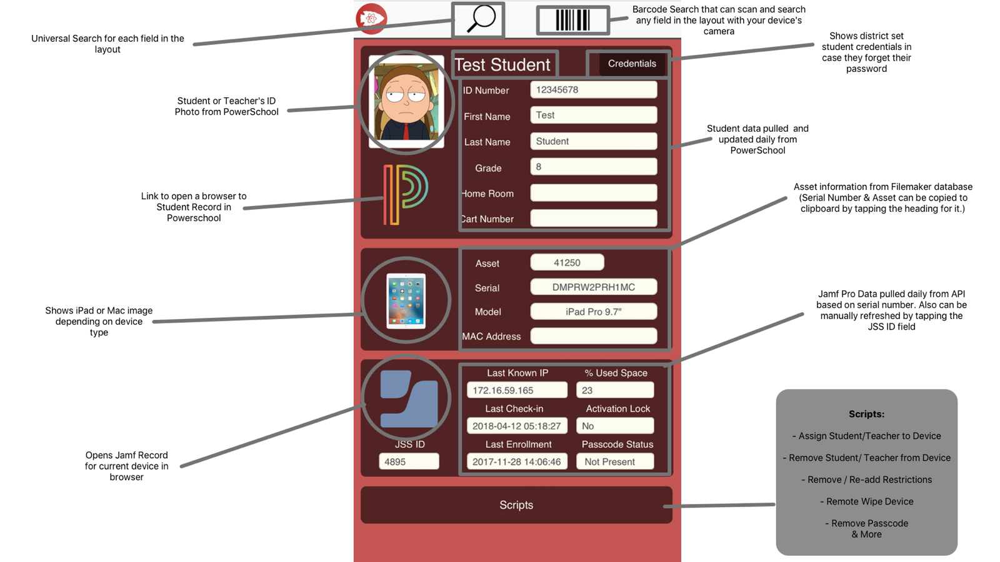

Custom FileMaker Deployment
A district inventory database that grew into a one-scan tool for assigning, restricting, and resetting student iPads.
Clinton Public Schools invested in FileMaker Pro in 2014 to track asset tags and serial numbers for our Mac and iOS devices. After a few years of building on it, it became much more than inventory.

I built workflows for assigning a device to a student or staff member, removing and re-adding restrictions, remotely wiping a device, clearing a passcode, and unassigning a device to return it to inventory.
Assigning a student an iPad
For the 2017–18 school year, we prepared every iOS device in Apple Configurator with a temporary user in Jamf and just enough configuration to get started: only Settings in the Dock and a wallpaper that said “Please connect to Wi-Fi.”
To assign a device, a technician picked the assign script, scanned the asset tag on the back of the iPad, then scanned the student’s schedule or ID number. That made an API call to Jamf to assign the student to the iPad. Once the student joined Wi-Fi, the iPad pulled down their configuration, their grade level’s apps, and the right restrictions.
Removing and re-adding restrictions
Technicians used this when they needed to change or check a setting that restrictions blocked. It came up often when students signed in to an Apple ID before restrictions applied, or when we needed to remove apps from the Home Screen without wiping the device. This was before MDM could remove apps directly.
How it’s built
- FileMaker Pro scripts
- FileMaker Server scheduled scripts
- Bash scripts over SSH to a remote server
- CSV exports from PowerSchool SIS
- Jamf Pro API